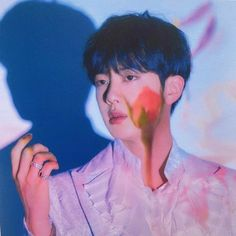

Kim Nam-joon
|
Su nombre de pila es Kim Nam-joon, y su nombre artístico solía ser Rap Monster. Ahora, su nombre artístico es simplemente RM. Nació en Dongjak-gu, Corea del Sur, y creció en el área de Ilsan-gu, donde su familia se mudó cuando él tenía alrededor de cinco años. Una de sus mayores anécdotas es haber visto la serie Friends con su madre, lo cual acredita como su mayor fuente de aprendizaje de Inglés como segunda lengua. Gracias a esto, y a que se fue a estudiar en Nueva Zelanda por cuatro meses, pulió su segundo idioma y ahora es bilingüe. ue reclutado en el 2010 por una audición de talento de Big Hit. Al ser seleccionado, ensayó por dos años con sus compañeros, un rapero llamado Min Yoon Gi (Suga) y un bailarín llamado Jung Ho Seok (J-Hope). Cuenta con un par de mixtapes como artista en solitario al igual que colaboraciones con varios intérpretes. Sus dos mixtapes se llaman RM y mono. En diciembre del 2022 saca su primer disco, titulado Indigo. |
|  | Kim Seok-Jin
|
Kim Seok-jin, cuyo nombre artístico es simplemente Jin, es miembro de BTS desde el año 2013. Es el mayor del grupo, y se destaca como vocalista y letrista. Ha escrito de manera conjunta tres solos para distintos discos de BTS, Awake, Epiphany y Moon. En el 2019 sacó su primera canción independiente del grupo, titulada Tonight. Es reconocido por su falsetto y sus tonos emotivos como cantante. En BTS se le conoce como el "visual", es decir, uno de los más guapos del grupo (según el estándar coreano). Nació en Anyang, Gyeonggi-do, pero luego se mudó a la zona de Gwacheon, en la misma provincia. Estudió un máster en cinematografía en la universidad virtual Hanyang. En esta época, lo reclutó un cazatalentos de Big Hit, y aceptó una audición para entrar en la empresa como actor. Al darse cuenta de que tenía talento para cantar, lo movieron al sistema de entrenamiento para volverse un idol.Ha trabajado como presentador en varios programas de variedad. |
Min Yoongi
|
Su nombre de nacimiento es Min Yoon-gi. Su nombre artístico es Suga dentro de BTS, y como solista, se le conoce como Agust D. Es un destacado rapero, letrista y productor dentro del grupo. En el 2016 sacó su primera mixtape como solista, llamada Agust D. Originalmente se unió a Big Hit bajo la idea de convertirse en productor musical. A los 13 años ya escribía letras de canciones, y había aprendido a manejar el sistema MIDI. A los 17 trabajó en un estudio de grabación, y para ese momento, comenzó a componer y arreglar música, agregando también su propio rap Se unió a Big Hit como productor de música, pero entrenó junto a RM y J-Hope por tres años hasta debutar con BTS en el 2013. Muchos de los temas del grupo también tienen créditos suyos como letrista. Ha compuesto y coproducido más de 120 temas tanto para la banda como para diferentes artistas. |
Jung Ho-Seok
|
Su verdadero nombre es Jung Ho-seok, pero su nombre artístico es J-hope. Destaca como rapero, bailarín principal, escritor y productor dentro de BTS. En el 2018 sacó su primer mixtape solista, llamado Hope World. En el 2019 tuvo una colaboración con Becky G, un cover del tema Chicken Noodle Soup. Nació en Gwangju, en Corea del Sur. Tiene una hermana mayor. Antes de debutar con el grupo formaba parte de un grupo de baile underground llamado Neuron. Estudió en la academia musical de Gwangju por seis años. Después de cursar el primer año de la secundaria, firmó con Big Hit Entertainment. J-Hope era bastante reconocido como bailarín antes de debutar. Había ganado varios premios locales de baile e incluso ganó una competencia nacional en el 2008. Gracias a su disfrute de la danza, creció un interés por el canto, lo cual lo llevó a una audición como idol.Su primer disco solista ha salido el 15 de junio del 2022, titulado Jack in the Box. |
Park Ji-min
|
Park Ji-min, conocido únicamente como Jimin, trabaja como cantante, letrista y bailarín. Es uno de los miembros que no cuenta todavía con producciones individuales, pero en los discos de la banda cuenta con diferentes solos. Entre ellos se encuentran Serendipity, Lie y Filter. Nace en el distrito de Geumjeong en Busan. Durante su adolescencia fue a la academia de baile Just Dance, donde aprendió el baile denominado pop and lock. Antes de empezar como trainee en Big Hit, fue a la academia de arte de Busan y era uno de los mejores en el departamento de danza moderna. Luego de seguir una sugerencia de uno de sus profesores, se presenta ante Big Hit Entertainment en una audición. Una vez que supera las audiciones en el 2012, se transfiere a la escuela de artes coreanas, graduándose en el 2014. También tiene estudios universitarios, dos estudios virtuales en administración y entretenimiento.En marzo del 2023, sacó su primer mini álbum, titulado Face. |
Kim Tae hyung
|
Kim Tae-Hyun, cuyo nombre artístico es V, es un cantante surcoreano. También ha participado en algunas novelas como actor y se dedica a componer algunos temas dentro de la banda. En el 2016 tuvo su primer papel como actor en el drama de época Hwarang: The Poet Warrior Youth. Su papel fue secundario.También colaboró con su compañero Jin, en un tema para la banda sonora del drama.Creció en el condado de Geochang, pero su nacimiento fue en el distrito Seo, en Daegu. Es el mayor de tres hijos. Uno de sus primeros acercamientos al arte fueron gracias a clases de saxofón, que su padre le insistió que tomara para empezar a buscar una carrera artística.Eventualmente, Tae-Hyun presentó una audición ante Big Hit Entertainment en Daegu, y entró al programa de trainees. Ha co-producido algunas canciones para el grupo, entre ellas Hold Me Tight y la letra para Fun Boyz. Tiene dos solos, Stigma y Singularity.En septiembre del 2023, sacó su primer mini-álbum, titulado Layover. La portada del disco es una foto de su perro, un pomeranian llamado Yeontan. |
Jeon Jung Kook
|
Jeon Jung-kook es conocido únicamente como Jungkook. Cantante y letrista, es el miembro más joven de BTS conocido en corea como el maknae. No cuenta con producciones oficiales como solista, pero su primer solo, Euphoria, es uno de los temas más famosos y populares de la banda. Su segunda canción solista, titulada My Time también se mantuvo mucho tiempo en el Billboard Hot 100. Está registrado como el productor de dos canciones de BTS: Love is Not Over y Magic Shop.Durante el 2011 audicionó para el programa de talentos Superstar K. No fue seleccionado, pero recibió ofertas de reclutamiento de otras siete empresas, entre ellas Big Hit Entertainment. Es uno de los célebres graduados de la reconocida Escuela de artes escénicas de Seúl. En noviembre del 2023 saca su disco solista titulado Golden. |